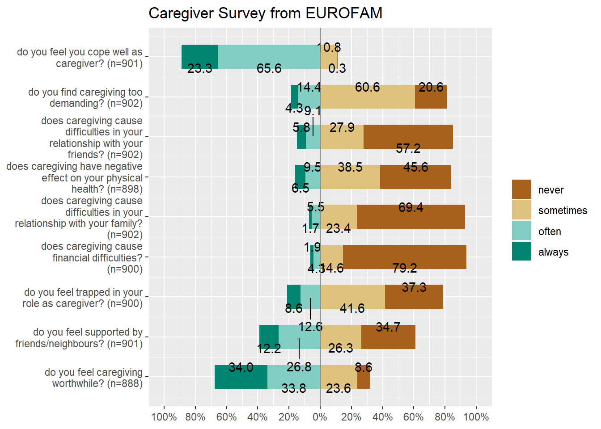

To recall, a categorical variable is one for which the possible measured or assigned values consist of a discrete set of categories, which may be ordered or unordered. Some typical examples are:
Gender, with categories “Male,” “Female.”
Marital status, with categories “Never married,” “Married,” “Separated,” “Divorced,” “Widowed.”
Fielding position (in baseball cricket), with categories “Slips,”Cover “,”Mid-off “Deep Fine Leg”, “Close-in”, “Deep”…
Side effects (in a pharmacological study), with categories “None,” “Skin rash,” “Sleep disorder,” “Anxiety,” . . ..
Political attitude, with categories “Left,” “Center,” “Right.”
Party preference (in India), with categories “BJP” “Congress,” “AAP,” “TMC”…
Treatment outcome, with categories “no improvement,” “some improvement,” or “marked improvement.”
Number of children, with categories 0, 1, 2, . . . .
As these examples suggest, categorical variables differ in the number of categories: we often distinguish binary variables (or dichotomous variables) such as Gender from those with more than two categories (called polytomous variables).
2 Categorical Data
From the {vcd package} vignette:
The first thing you need to know is that categorical data can be represented in three different forms in R, and it is sometimes necessary to convert from one form to another, for carrying out statistical tests, fitting models or visualizing the results.
Case Data
Frequency Data
Cross-Tabular Count Data
Let us first see examples of each.
2.1 Case Form
Containing individual observations with one or more categorical factors, used as classifying variables. The total number of observations is nrow(X), and the number of variables is ncol(X).
In many circumstances, data is recorded on each individual or experimental unit. Data in this form is called case data, or data in case form.
ID
Treatment
Sex
Age
Improved
57
Treated
Male
27
Some
46
Treated
Male
29
None
77
Treated
Male
30
None
17
Treated
Male
32
Marked
36
Treated
Male
46
Marked
23
Treated
Male
58
Marked
Arthritis Treatments and Effects (first 6 entries)
The Arthritis data set has three factors and two integer* variables. One of the three factors Improved is an ordered factor.
ID
Treatment: a factor; Placebo or Treated
Sex: a factor, M / F
Age: integer
Improved: Ordinal factor; None < Some < Marked
2.2 Frequency Data
Data in frequency form has already been tabulated, by counting over the (combinations of ) categories of the table variables. When the data are in case form, we can always trace any observation back to its individual identifier or data record, since each row is a unique observation or case; the reverse is rarely possible.
Frequency Data is usually a data frame, with columns of categorical variables and at least one column containing frequency or count information.
Respondents in the GSS survey were classified by sex and party identification.
2.3 Table form
Table Form Data can be a matrix, array or table object, whose elements are the frequencies in an n-way table. The variable names (factors) and their levels are given by dimnames(X).
Show the Code
HairEyeColorclass(HairEyeColor)
, , Sex = Male
Eye
Hair Brown Blue Hazel Green
Black 32 11 10 3
Brown 53 50 25 15
Red 10 10 7 7
Blond 3 30 5 8
, , Sex = Female
Eye
Hair Brown Blue Hazel Green
Black 36 9 5 2
Brown 66 34 29 14
Red 16 7 7 7
Blond 4 64 5 8
[1] "table"
HairEyeColor is a “two-way” table, consisting of two tables, one for Sex = Female and the other for Sex = Male. The total number of observations is sum(X). The number of dimensions of the table is length(dimnames(X)), and the table sizes are given by sapply(dimnames(X), length). The data looks like a n-dimensional cube and needs n-way tables to represent.
We may need to convert the (multiple) tables into a data frame:
Show the Code
## Convert the two tables into a data frameHairEyeColor %>%as_tibble() %>%# Converthead() %>%# Take first few rows to showkbl(caption ="Hair Eye and Color (First 6 Entries)") %>%kable_classic_2(html_font ="Cambria", full_width = F)
Hair
Eye
Sex
n
Black
Brown
Male
32
Brown
Brown
Male
53
Red
Brown
Male
10
Blond
Brown
Male
3
Black
Blue
Male
11
Brown
Blue
Male
50
Hair Eye and Color (First 6 Entries)
3 Creating Contingency Tables
Most plots for Categorical Data ( as we shall see ) require that the data be converted into a Contigency Table; even Statistical tests for Proportions ( the $ ^2 $ test ) need Contingency Tables. The Frequency Table we encountered earlier is very close to being a full-fledged Contingency Table.
In this section we understand how to make Contingency Tables from each of the three forms.
4 What sort of Plots can we make for Categorical Data?
We have already seen bar plots, which allow us to plot counts of categorical data. However, if there are a large number* of categorical variables or if thecategorical variables have many levels, the bar plot is not adequate.
From Michael Friendly:
The familiar techniques for displaying raw data are often disappointing when applied to categorical data. The simple scatterplot, for example, widely used to show the relation between quantitative response and predictors, when applied to discrete variables, gives a display of the category combinations, with all identical values overplotted, and no representation of their frequency.
Instead, frequencies of categorical variables are often best represented graphically using areas rather than as position along a scale. Using the visual attribute:
\[\pmb{area \sim frequency}\]
allows creating novel graphical displays of frequency data for special circumstances.
Let us not look at some sample plots that embody this “area-frequency* principle.
4.1 Mosaic Plots
A mosaicplot is basically an area-proportional visualization of (typically observed) frequencies, consisting of tiles (corresponding to the cells) created by vertically and horizontally splitting a rectangle recursively. Thus, the area of each tile is proportional to the corresponding cell entry given the dimensions of previous splits.
The vcd::mosaic() function needs the data in contingency table form. We will use vcd::structable() function to construct one:
Show the Code
art <- vcd::structable(~ Treatment + Improved, data = Arthritis)art
ggballoonplot(housetasks, fill ="value")+scale_fill_viridis_c(option ="C")
Show the Code
df <-as.data.frame(HairEyeColor)ggballoonplot(df, x ="Hair", y ="Eye", size ="Freq",fill ="Freq", facet.by ="Sex",ggtheme =theme_bw()) +scale_fill_viridis_c(option ="C")
4.3 Plots for Likert Data
In many business situations, we perform surveys to get Likert scale data, where several respondents rate a product or a service on a scale of Very much like, somewhat like, neutral, Dislike and Very much dislike. Such data may look for example as follows:
Show the Code
data(efc)head(efc, 20)
efc is a German data set from a European study on family care of older people. Following a common protocol, data were collected from national samples of approximately 1,000 family carers (i.e. caregivers) per country and clustered into comparable subgroups to facilitate cross-national analysis. One of the research questions in this EUROFAM study was:
What are the main difficulties carers experience accessing the services used? What prevents carers from accessing unused supports that they need? What causes them to stop using still-needed services?
We will select the variables from the efc data set that related to coping (on part of care-givers) and plot their responses after inspecting them:
Show the Code
efc %>%select(dplyr::contains("cop")) %>%str()
'data.frame': 908 obs. of 9 variables:
$ c82cop1: num 3 3 2 4 3 2 4 3 3 3 ...
..- attr(*, "label")= chr "do you feel you cope well as caregiver?"
..- attr(*, "labels")= Named num [1:4] 1 2 3 4
.. ..- attr(*, "names")= chr [1:4] "never" "sometimes" "often" "always"
$ c83cop2: num 2 3 2 1 2 2 2 2 2 2 ...
..- attr(*, "label")= chr "do you find caregiving too demanding?"
..- attr(*, "labels")= Named num [1:4] 1 2 3 4
.. ..- attr(*, "names")= chr [1:4] "Never" "Sometimes" "Often" "Always"
$ c84cop3: num 2 3 1 3 1 3 4 2 3 1 ...
..- attr(*, "label")= chr "does caregiving cause difficulties in your relationship with your friends?"
..- attr(*, "labels")= Named num [1:4] 1 2 3 4
.. ..- attr(*, "names")= chr [1:4] "Never" "Sometimes" "Often" "Always"
$ c85cop4: num 2 3 4 1 2 3 1 1 2 2 ...
..- attr(*, "label")= chr "does caregiving have negative effect on your physical health?"
..- attr(*, "labels")= Named num [1:4] 1 2 3 4
.. ..- attr(*, "names")= chr [1:4] "Never" "Sometimes" "Often" "Always"
$ c86cop5: num 1 4 1 1 2 3 1 1 2 1 ...
..- attr(*, "label")= chr "does caregiving cause difficulties in your relationship with your family?"
..- attr(*, "labels")= Named num [1:4] 1 2 3 4
.. ..- attr(*, "names")= chr [1:4] "Never" "Sometimes" "Often" "Always"
$ c87cop6: num 1 1 1 1 2 2 2 1 1 1 ...
..- attr(*, "label")= chr "does caregiving cause financial difficulties?"
..- attr(*, "labels")= Named num [1:4] 1 2 3 4
.. ..- attr(*, "names")= chr [1:4] "Never" "Sometimes" "Often" "Always"
$ c88cop7: num 2 3 1 1 1 2 4 2 3 1 ...
..- attr(*, "label")= chr "do you feel trapped in your role as caregiver?"
..- attr(*, "labels")= Named num [1:4] 1 2 3 4
.. ..- attr(*, "names")= chr [1:4] "Never" "Sometimes" "Often" "Always"
$ c89cop8: num 3 2 4 2 4 1 1 3 1 1 ...
..- attr(*, "label")= chr "do you feel supported by friends/neighbours?"
..- attr(*, "labels")= Named num [1:4] 1 2 3 4
.. ..- attr(*, "names")= chr [1:4] "never" "sometimes" "often" "always"
$ c90cop9: num 3 2 3 4 4 1 4 3 3 3 ...
..- attr(*, "label")= chr "do you feel caregiving worthwhile?"
..- attr(*, "labels")= Named num [1:4] 1 2 3 4
.. ..- attr(*, "names")= chr [1:4] "never" "sometimes" "often" "always"
The coping related variables have responses on the Likert Scale (1,2,3,4) which correspong to (never, sometimes, often, always), and each variable also has a label defining each variable. We can plot this data using the plot_likert function from package sjPlot:
Show the Code
efc %>%select(dplyr::contains("cop")) %>% sjPlot::plot_likert(title ="Caregiver Survey from EUROFAM")

So there we are with Categorical data ! There are a few other plots with this type of data, which are useful in very specialized circumstances. One example of this is the agreement plot which captures the agreement between two (sets) of evaluators, on ratings given on a shared ordinal scale to a set of items. An example from the field of medical diagnosis is the opinions of two specialists on a common set of patients.
5 Conclusion
How are these bar plots different from histograms? Why don’t “regular” plots simply work for Categorical data? Discuss!
---title: "\U0001F409 Visualizing Categorical Data"author: "Arvind Venkatadri"date: 27/Dec/2022date-modified: "`r Sys.Date()`"abstract: Types, Categories, and Countsorder: 120format: html#fig-format: retinacode-fold: truecode-summary: Show the Codecode-tools: truecode-line-numbers: truecode-overflow: scrollcode-block-border-left: truecode-block-bg: "beige"code-copy: truefig-align: centerreference-location: margincap-location: marginhighlight-style: tangodf-print: pagedsection-divs: truenumber-sections: trueexecute: freeze: autotags:- Proportions- Frequency Tables- Contingency Tables- Numerical Data in Groups- Margins- Likert Scale data- Bar Plots (for Contingency Tables)- Mosaic Plots- Balloon Plots- Pie Charts- Correspondence Analysis---```{r setup, include=FALSE}knitr::opts_chunk$set(echo =TRUE)library(blogdown)library(tidyverse)library(skimr)library(vcd) # Michael Friendly's package, Visualizing Categorical Datalibrary(vcdExtra) # Categorical Data Setslibrary(sjPlot) # Likert Scale Plotslibrary(ggpubr) # Colours, Themes and geometries in ggplotlibrary(ca) # Correspondence Analysis## Making Tableslibrary(kableExtra) # html styled tableslibrary(gt) # MAking Cool Tableslibrary(patchwork) # To arrange plots on a grid and other things```## IntroductionTo recall, a categorical **variable** is one for which the possiblemeasured or assigned values consist of a discrete set of categories,which may be `ordered` or `unordered`. Some typical examples are:- Gender, with categories "Male," "Female."- Marital status, with categories "Never married," "Married," "Separated," "Divorced," "Widowed."- Fielding position (in ~~baseball~~ cricket), with categories "Slips,"Cover ","Mid-off "Deep Fine Leg", "Close-in", "Deep"...- Side effects (in a pharmacological study), with categories "None," "Skin rash," "Sleep disorder," "Anxiety," . . ..- Political attitude, with categories "Left," "Center," "Right."- Party preference (in India), with categories "BJP" "Congress," "AAP," "TMC"...- Treatment outcome, with categories "no improvement," "some improvement," or "marked improvement."- Age, with categories "0--9," "10--19," "20--29," "30--39," . . . .- Number of children, with categories 0, 1, 2, . . . .As these examples suggest, categorical variables differ in the number ofcategories: we often distinguish binary variables (or dichotomousvariables) such as Gender from those with more than two categories(called polytomous variables).{{< video, https://www.youtube.com/embed/7NhNeADL8fA >}}## Categorical DataFrom the `{vcd package}` vignette:> The first thing you need to know is that categorical data can be> represented in **three different forms in R**, and it is sometimes> necessary to convert from one form to another, for carrying out> statistical tests, fitting models or visualizing the results.- Case Data- Frequency Data- Cross-Tabular Count DataLet us first see examples of each.### Case FormContaining *individual observations* with one or more **categorical**factors, used as classifying variables. The total number of observationsis `nrow(X)`, and the number of variables is `ncol(X)`.```{r Arthritis-Dataset}names(Arthritis)class(Arthritis)glimpse(Arthritis)```From Michael Friendly [Discrete Data Analysis and Visualization](/pdf/DataAnalytics/Michael-Friendly-DDAS.pdf) :> In many circumstances, data is recorded on each individual or> experimental unit. Data in this form is called case data, or data in> case form.```{r, case-form-data, echo=FALSE}head(Arthritis) %>%kbl(caption ="Arthritis Treatments and Effects (first 6 entries)",centering =TRUE) %>%kable_classic_2(html_font ="Cambria", full_width = F,)```The `Arthritis` data set has three factors and two integer\* variables.One of the three factors `Improved` is an **ordered factor**.1) ID2) Treatment: a factor; Placebo or Treated3) Sex: a factor, M / F4) Age: integer5) Improved: **Ordinal factor**; None \< Some \< Marked### Frequency DataData in frequency form has already been tabulated, by counting over the(combinations of ) categories of the table variables. When the data arein **case form**, we can always trace any observation back to itsindividual identifier or data record, since each row is a uniqueobservation or *case*; the reverse is rarely possible.Frequency Data is usually a data frame, with columns of categoricalvariables and at least one column containing `frequency` or `count`information.```{r}str(GSS)GSS %>%kbl(caption ="General Social Survey",centering =TRUE) %>%kable_classic_2(html_font ="Cambria", full_width = F,)```Respondents in the GSS survey were classified by `sex` and `party`identification.### Table form> Table Form Data can be a `matrix`, `array` or `table object`, whose> elements are the frequencies in an **n-way table**. The variable names> (factors) and their levels are given by `dimnames(X)`.```{r Table-Form, results='hold'}HairEyeColorclass(HairEyeColor)````HairEyeColor` is a "two-way" table, consisting of **two tables**, onefor `Sex = Female` and the other for `Sex = Male`. The total number ofobservations is `sum(X)`. The number of dimensions of the table is`length(dimnames(X))`, and the table sizes are given by`sapply(dimnames(X), length)`. The data looks like a n-dimensional cubeand needs n-way tables to represent.```{r exploring-tables,results='hold'}sum(HairEyeColor)dimnames(HairEyeColor)sapply(dimnames(HairEyeColor), length)```We may need to convert the (multiple) tables into a data frame:```{r tables-to-data-frame}## Convert the two tables into a data frameHairEyeColor %>%as_tibble() %>%# Converthead() %>%# Take first few rows to showkbl(caption ="Hair Eye and Color (First 6 Entries)") %>%kable_classic_2(html_font ="Cambria", full_width = F)```## Creating Contingency TablesMost plots for Categorical Data ( as we shall see ) require that the data be converted into a *Contigency Table*; even Statistical tests for Proportions ( the $ \chi^2 $ test ) need Contingency Tables. The *Frequency Table* we encountered earlier is very close to being a full-fledged Contingency Table. In this section we understand how to make Contingency Tables from each of the three forms.## What sort of Plots can we make for Categorical Data?We have already seen bar plots, which allow us to plot counts of categorical data. However, if there are a large number* of categorical variables or if thecategorical variables have many levels, the bar plot is not adequate. From Michael Friendly:> The familiar techniques for displaying raw data are often> disappointing when applied to categorical data. The simple> scatterplot, for example, widely used to show the relation between> quantitative response and predictors, when applied to discrete> variables, gives a display of the category combinations, with all> identical values overplotted, and no representation of their> frequency.> Instead, frequencies of categorical variables are often best> represented graphically using **areas** rather than as **position> along a scale**. Using the visual attribute:$$\pmb{area \sim frequency}$$> allows creating novel graphical displays of frequency data for special> circumstances.Let us not look at some sample plots that embody this "area-frequency\*principle.### Mosaic PlotsA mosaicplot is basically an area-proportional visualization of (typically observed) frequencies, consisting of tiles (corresponding to the cells) created by vertically and horizontally splitting a rectangle recursively. Thus, the area of each tile is proportional to the corresponding cell entry given the dimensions of previous splits.The `vcd::mosaic()` function needs the data in *contingency table* form. We will use `vcd::structable()` function to construct one:```{r mosaic-plot-using-vcd}art <- vcd::structable(~ Treatment + Improved, data = Arthritis)artvcd::mosaic(art, gp = shading_max)### Or### vcd::mosaic(structable(~ Treatment + Improved, data = Arthritis), gp = shading_max, split_vertical = TRUE)```### Balloon Plots```{r balloon-plot-using-ggpubr}housetasks <-read.delim(system.file("demo-data/housetasks.txt", package ="ggpubr"),row.names =1 )head(housetasks, 4)ggballoonplot(housetasks, fill ="value")+scale_fill_viridis_c(option ="C")``````{r}df <-as.data.frame(HairEyeColor)ggballoonplot(df, x ="Hair", y ="Eye", size ="Freq",fill ="Freq", facet.by ="Sex",ggtheme =theme_bw()) +scale_fill_viridis_c(option ="C")```### Plots for Likert DataIn many business situations, we perform surveys to get Likert scaledata, where several respondents rate a product or a service on a scaleof `Very much like`, `somewhat like`, `neutral`, `Dislike` and`Very much dislike`. Such data may look for example as follows:```{r}data(efc)head(efc, 20)````efc` is a German data set from a European study on family care of older people. Following a common protocol, data were collected from national samples of approximately 1,000 family carers (i.e. caregivers) per country and clustered into comparable subgroups to facilitate cross-national analysis. One of the *research questions* in [**this EUROFAM study**](https://doi.org/10.1093/geront/48.6.752) was:> What are the main difficulties carers experience accessing the servicesused? What prevents carers from accessing unusedsupports that they need? What causes them to stop using still-needed services?We will select the variables from the `efc` data set that related to *coping* (on part of care-givers) and plot their responses after inspecting them:```{r}efc %>%select(dplyr::contains("cop")) %>%str()```The `cop`ing related variables have responses on the Likert Scale `(1,2,3,4)` which correspong to `(never, sometimes, often, always)`, **and** each variable also has a `label` defining each variable. We can plot this data using the `plot_likert` function from package `sjPlot`:```{r}efc %>%select(dplyr::contains("cop")) %>% sjPlot::plot_likert(title ="Caregiver Survey from EUROFAM")```So there we are with Categorical data ! There are a few other plots with this type of data, which are useful in very specialized circumstances. One example of this is the `agreement plot` which captures the agreement between two (sets) of evaluators, on ratings given on a shared ordinal scale to a set of items. An example from the field of medical diagnosis is the opinions of two specialists on a common set of patients. ## ConclusionHow are these bar plots different from histograms? Why don't "regular" plots simply work for Categorical data?Discuss!## References1. Using the `strcplot` command from `vcd`, <https://cran.r-project.org/web/packages/vcd/vignettes/strucplot.pdf>1. Creating Frequency Tables with `vcd`, <https://cran.r-project.org/web/packages/vcdExtra/vignettes/A_creating.html>1. Creating mosaic plots with `vcd`, <https://cran.r-project.org/web/packages/vcdExtra/vignettes/D_mosaics.html>1.